Как пользоваться конструктором
- Идите по этапам сверху вниз. Не пропускайте оплату и профиль ради «красивой автоматизации».
- Каждое действие — одна галочка. Они сохраняются в этом браузере (localStorage), на сервер ничего не уходит.
- Жёлтые блоки — готовые примеры, которые можно скопировать и подставить свои слова.
- Зелёные блоки «Показываем» — что снять или написать в блог в этот же день. Завод строится у всех на виду.
- Янтарные блоки «Зарабатываем» — какое действие в этот момент может принести деньги или подготовить оплату.
- Коралловые блоки — нюансы: деньги, лимиты, баны, ключи, доступ из Казахстана. Только проверенные факты; если не уверены — так и написано.
Цены, лимиты и пункты меню проверены по официальным страницам 16 ноября 2026 года (часовой пояс Азия/Алматы). Перед оплатой переоткройте источник: сервисы меняют тарифы. Имена кнопок указаны, только если они были на официальной странице помощи. Если не уверены — описываем цель, а не выдумываем кнопку.
Большая карта завода
Нажмите на этап — перейдёте к инструкциям. Жёлтая рамка по центру — место человека. Без этой рамки завод превращается в поток пластика.
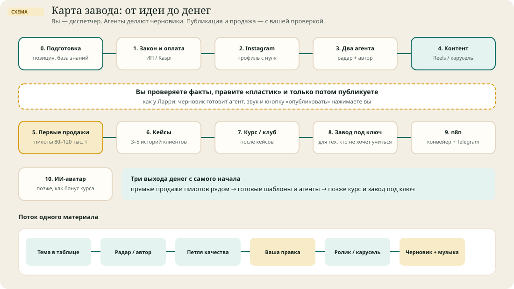
Лестница продуктов
С нуля не продаём «большой курс миллионам». Сначала закрываем 3–5 пилотов тёплым кругам и местным компаниям. Цены помечены как предложения.
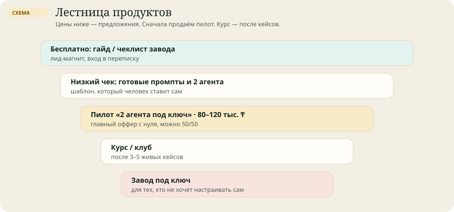
| Ступень | Что получает человек | Когда | Цена (предложение) |
|---|---|---|---|
| Гайд / чеклист | Эта страница или короткая PDF-версия «как собрать двух агентов» | Сразу, в обмен на диалог | 0 ₸ |
| Готовые промпты | Радар + автор + библия стиля, человек ставит сам | Можно параллельно с пилотами | предложение: 15–35 тыс. ₸ |
| Пилот «2 агента под ключ» | Очередь тем, два агента, петля качества, вы настраиваете | Неделя 1–2, без аудитории | предложение: 80–120 тыс. ₸, можно 50/50 |
| Курс / клуб | Разбор завода по шагам, обратная связь | После 3–5 кейсов с разрешения клиентов | смотреть актуальные оферты конкурентов; свою цену ставьте после кейсов |
| Завод под ключ | Таблица, агенты, черновики, регламент публикации, при желании n8n | Когда пилоты уже сделаны не один раз | выше пилота; не назначайте «с потолка» до кейсов |
Почему начинаем с одного Instagram
Аудитории нет нигде. Разбрасываться на TikTok, YouTube, Telegram и сайт сразу — это пять пустых комнат. Instagram выбран как первая площадка, потому что в нём есть и короткие ролики для незнакомцев (Reels), и переписка в директ, и привычная среда для местного бизнеса в Алматы. Весь путь сделки держим внутри одной площадки: человек увидел ролик → понял оффер в профиле → написал → созвон → оплата Kaspi.
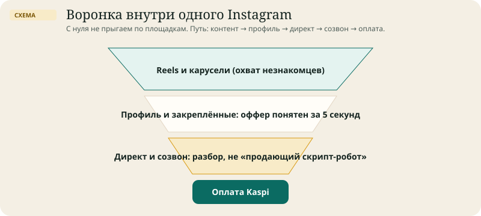
Это выбор стратегии, а не статистика «Instagram всегда лучше». Другие площадки можно добавить, когда одна воронка уже приносит сделки.
Глобальный чеклист: что завести и в каком порядке
Покупайте только следующий нужный слой. Не начинайте с аватара и автопостинга.
Не фиксируем сумму «завода в месяц» — она зависит от выбранных подписок и курса валют. Складывайте только то, что уже открыли на официальной странице оплаты.
Уже собрано: агенты и неделя 1
Инструкции двух агентов и пакет контента на 16–22 ноября 2026 лежат в этом же репозитории. Темы радара опираются на официальные страницы инструментов, открытые 16 ноября 2026 (Азия/Алматы). Цена пилота по-прежнему помечена как предложение.
Этапы
Подготовка: одна фраза и список людей
Пока нет роликов и автоматизации. Есть тетрадь. Вы решаете, кому помогаете, и кому напишете в первую неделю.
Если фразу нельзя сказать за столом знакомому, оффер в профиле тоже не сработает.
- Откройте заметки или Google Документ с названием «Завод».
- Напишите одну фразу по формуле: «Я помогаю [кому] делать [что], без [чего они боятся]».
- Прочитайте фразу вслух. Если звучит как рекламный буклет — упростите.
Пример заполненной фразы
Плохой вариант, не копируйте как рабочий: «Создаю синергию нейросетей для масштабирования личного бренда в эпоху ИИ».
Агенты не должны писать «из головы». Им нужна ваша правда: кто вы, чем не занимаетесь, какие слова запрещены.
- Создайте документ «База». Хватит Google Документа или папки в Obsidian — что умеете открывать каждый день.
- Заполните четыре блока: кто я; кому помогаю; чего не обещаю; 10 фактов из своей практики (только настоящих).
- Добавьте черновик библии стиля: 7 правил.
Пример библии стиля (скопируйте и поправьте)
С нуля первые деньги приходят не из ленты, а из уже существующих отношений.
- Откройте телефон, WhatsApp и почту.
- Выпишите 20 человек или компаний, которым не стыдно написать. Колонки: имя, откуда знаете, чем их бизнес живёт, как можете помочь заводом.
- Отметьте 7, кому напишете на этой неделе.
Пример строки списка
Показываем
Ролик или карусель: «День 0. Аудитории нет. Вот одна фраза, кем я буду, и тетрадка с 20 именами. Завод начинается не с API, а с этого листа».
Зарабатываем
На этом этапе ещё не выставляем счёт. Но список из 20 имён — это будущая касса. Без него красивый завод будет крутиться вхолостую.
Нюансы и подводные камни
- Не ждите идеального названия и логотипа. Имя можно уточнить на второй неделе.
- Не обещайте в позиции цифры, которых у вас нет. Это потом ударит по доверию и по правилам площадок про вводящий в заблуждение контент.
- База знаний не должна содержать чужие коммерческие тайны и персональные данные клиентов без основания.
- Не путайте этот личный бренд с другими вашими бизнесами, если не хотите смешивать офферы. Можно упомянуть опыт, но продаём здесь завод и обучение.
Закон и оплата: сначала можете взять деньги
Продавать пилот «с понедельника» нельзя, если неясно, на какой счёт человеку платить и как вы это оформите.
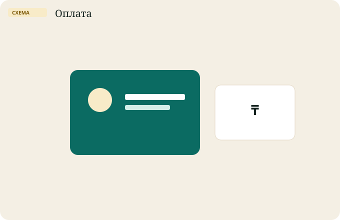
Цель: вы можете выдать человеку понятные реквизиты и не смешивать это с случайным переводом «на карту друга».
- Откройте официальные ресурсы: портал egov.kz и сайт Комитета государственных доходов kgd.gov.kz.
- Сравните актуальные варианты для вашей ситуации (в том числе регистрация ИП и режимы для самозанятых, если они вам доступны). Не копируйте ставки «из чата» — они меняются.
- Запишите в документ «Завод»: какую форму выбрали, дату и что ещё нужно доделать (уведомление, налоговое приложение, счёт).
Мы сознательно не рисуем «нажмите вот эту красную кнопку в egov»: интерфейс обновляется, а выдуманный клик-путь опаснее, чем честная отсылка к официальному сайту.
Для местных пилотов чаще всего удобен Kaspi. Международные агрегаторы (Prodamus, GetCourse и другие) имеют смысл позже, когда появится поток из РФ или карта курса.
- Откройте официальный сайт или приложение Kaspi и найдите актуальный раздел для бизнеса / Kaspi Pay. Условия, комиссии и сроки подключения берите только оттуда.
- Подготовьте короткий текст, который отправите клиенту вместе со счётом: что входит в пилот, сумма, как платить, что будет после оплаты.
- Для первых сделок рассрочку 50/50 можно описать просто: 50% до старта, 50% после сдачи. Это договорённость сторон, а не автоматически «Kaspi Red».
- Подключение банковской или Kaspi-рассрочки для бизнеса проверяйте по официальным условиям в момент подключения. Срок «через N дней после первых продаж» мы здесь не утверждаем, если не открыли актуальный регламент в этой сборке.
Пример сообщения со счётом
Даже на пилоте человек должен понимать, что получит и чего не получит.
- Напишите одну страницу: состав работ, сроки, сколько правок, что считается сдачей, как возвращаете предоплату, если не стартовали.
- Когда начнёте продавать открыто многим людям, понадобятся публичная оферта и политика персональных данных. Для первых 3–5 сделок через переписку всё равно фиксируйте состав письменно.
- Не обещайте в договоре просмотры, подписчиков и доход клиента.
Показываем
«День, когда я открыл приём денег. Не ждал 10 000 подписчиков. Вот как выглядит сообщение со счётом (сумму и имя клиента можно скрыть)».
Зарабатываем
С этого момента вы технически можете взять предоплату за пилот. Если тёплый контакт уже готов — не откладывайте «на потом, когда будет красивый сайт».
Нюансы и подводные камни
- Иностранные сервисы (OpenAI, Anthropic, n8n Cloud, генераторы видео) обычно тарифицируются в евро или долларах. Для оплаты из Казахстана может понадобиться карта, которая проходит международные платежи. Это не нарушение, но сбой оплаты — частая пауза проекта.
- Не храните сканы документов и реквизиты клиентов в открытой таблице и не скармливайте их языковой модели без нужды.
- Комиссии платёжных систем едят маржу пилота. Заложите их в цену, а не «потом как-нибудь».
- Юридический и налоговый выбор индивидуален. Этот сайт не заменяет консультацию бухгалтера или юриста.
Instagram-профиль, которому можно написать
Задача профиля не «набрать красоту». За 5 секунд должно быть ясно, кто вы, что продаёте и что нажать.
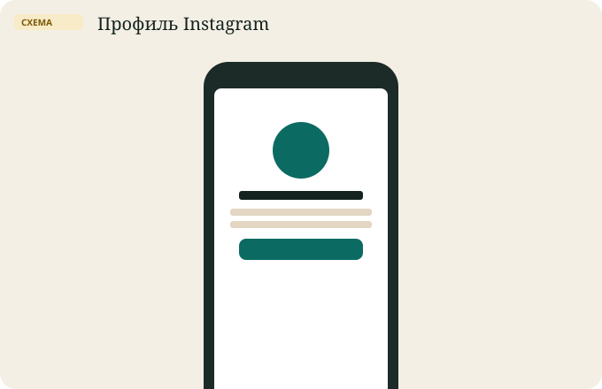
Человек из ролика попадает сюда. Если описание про жизнь вообще, пилот не купят.
- Скачайте официальное приложение Instagram и создайте аккаунт. Если аккаунт уже есть личный — решите, будете ли вести бренд отдельно.
- В имени (это не ник) напишите понятное: «Имя · ИИ для бизнеса», а не только латинский ник.
- Ник сделайте коротким и таким, который можно сказать по телефону.
- В описании: кто вы, для кого, что сейчас собираете, куда писать. Город имеет смысл указать, если продаёте местным.
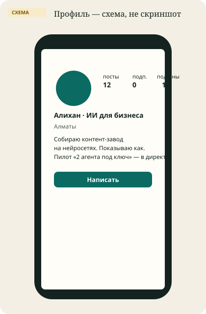
Это схема, а не настоящий скриншот Instagram.
Пример описания
Пустой профиль выглядит как брошенный магазин. Не нужно 30 роликов, нужно 3 понятных материала.
- Аватар: лицо или спокойный знак. Не кладите на картинку мелкий нечитаемый текст.
- Заготовьте 3–4 будущие обложки актуальных: «Завод», «Пилот», «Примеры», «Обо мне».
- Первые три публикации (когда появятся): один ролик «кто я и что собираю», одна карусель «как работают 2 агента», один разбор «сколько стоит пилот и что в него входит».
Для начала можно публиковать как обычный аккаунт. Официальный Content Publishing API и кабинет статистики доступны профессиональным аккаунтам. Цель: не пропустить этот шаг перед любой официальной автоматизацией.
- В приложении Instagram откройте настройки аккаунта и найдите переход к профессиональному / бизнес- или авторскому аккаунту по официальной справке Instagram. Имена пунктов меняются — ориентируйтесь на справку, не на пересказ.
- Не подключайте сторонние сервисы, которые просят логин и пароль Instagram. Официальная позиция: такие приложения не нужно использовать, они могут получить доступ к переписке и привести к ограничениям. Источник: справка Instagram о приложениях, обещающих лайки и подписчиков.
Показываем
«Собрал профиль с нуля. 0 подписчиков. Вот три строки, которые я написал в описании, и почему в них уже есть оффер».
Зарабатываем
Каждая ссылка и каждое «напишите “завод”» — это касса. Профиль должен продавать пилот даже если роликов пока мало.
Нюансы и подводные камни
- Накрутка лайков и подписчиков — нарушение правил. Instagram прямо просит не собирать их искусственно и не использовать сторонние приложения «за логин». Источники: Community Guidelines, справка об приложениях с лайками.
- Повторные коммерческие сообщения людям без их согласия — тоже в зоне спама по тем же Guidelines («repeatedly contacting people for commercial purposes without their consent»).
- Не ставьте в описание обещание дохода. Это бьёт и по доверию, и по будущим кейсам.
- Instagram в Казахстане, как правило, доступен без обходных путей. Не настраивайте «серую» автоматизацию «на всякий случай».
Первые два агента: радар тем и автор
Это и конвейер для себя, и товар, который продаёте в пилоте. Не нужно десять агентов. Нужны двое и петля качества.
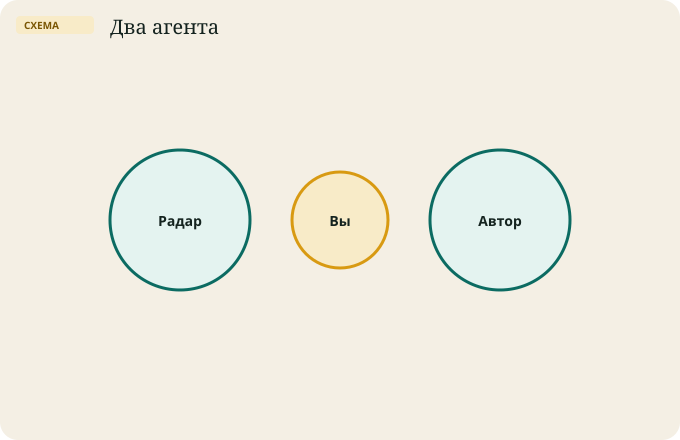
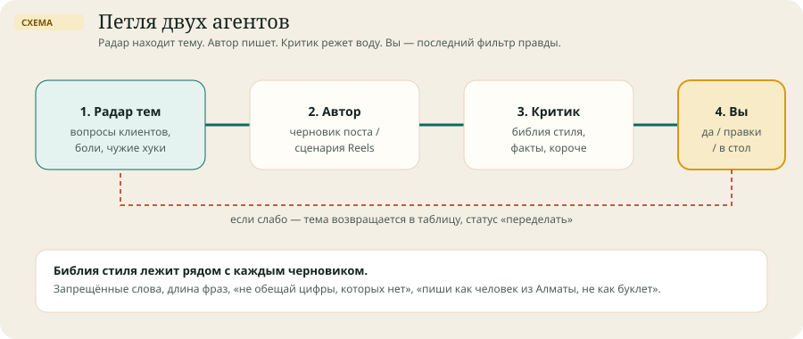
Завод начинается с очереди, а не с вдохновения в моменте.
- Создайте Google Таблицу. Первый лист назовите topics.
- Сделайте шапку ровно с этими колонками: id, topic, format, audience, status, draft, critique, row_number. Колонку row_number можно не заполнять вручную: некоторые узлы n8n подставляют номер строки сами. Если не подставят — напишите номер руками.
- Допустимые статусы: new, rewrite, review, approved, published.
- Занесите 15 тем заранее: вопросы клиентов, возражения, закулисье сборки завода.
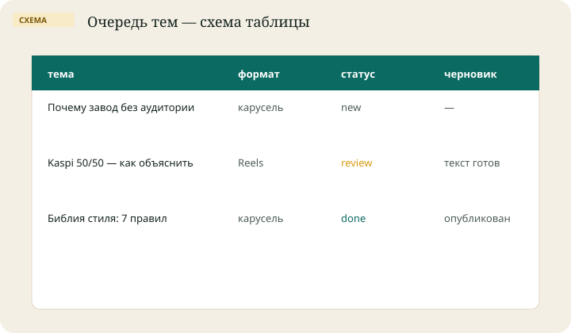
Пример трёх строк
Радар не пишет посты. Он предлагает темы и хуки, которые можно защитить фактами из вашей базы.
- Откройте ChatGPT, Claude или другую привычную модель.
- Вставьте системный промпт радара (ниже) и прикрепите текст базы знаний.
- Попросите 10 тем. Вычеркните те, где пришлось бы выдумывать цифры.
- Оставшиеся занесите в таблицу со статусом new.
Промпт радара — копируйте
Пример ответа радара (сжато)
Один проход «напиши пост» даёт пластик. Второй проход — редактор по библии стиля — снимает воду. Третий проход — вы.
- Скопируйте промпт автора. Всегда прикладывайте тему, формат, базу и библию стиля.
- Полученный текст отправьте критику (второй промпт).
- Если критик ставит FAIL — либо правите, либо меняйте тему. Не публикуйте FAIL.
- Сохраните оба промпта в документ: это часть пилота, который продаёте клиенту.
Промпт автора
Промпт критика
Пример короткого выхода автора (карусель)
Показываем
Запись экрана: как тема из таблицы превращается в черновик и как критик заворачивает «революционный» абзац. Это лучший продающий ролик, потому что зритель видит товар в работе.
Зарабатываем
Эти два агента — содержимое пилота за 80–120 тыс. ₸ (предложение). Пока собираете их себе, одновременно собираете демо для созвона с Айгуль.
Нюансы и подводные камни
- Ключи API — как пароль от кассы. Не кладите их в таблицу, в публичный GitHub и в пересылку «себе в избранное» на чужих устройствах. В n8n ключи живут в Credentials, не в узлах.
- Модель уверенно выдумывает кейсы. Петля качества не роскошь, а предохранитель.
- Подписка в приложении ChatGPT и ключ API — разные продукты с разными ценами. Смотрите официальную страницу оплаты перед списанием.
- Не скармливайте модели персональные данные клиентов и закрытые финансовые сведения.
Контент без лица и метод Ларри для Instagram
Снимать лицо не обязательно. Нужны хук, понятные кадры и музыка, которую ставите вы. Здесь же разбираем кейс агента Ларри: он работал через TikTok, и мы честно переносим метод на Reels и карусели.
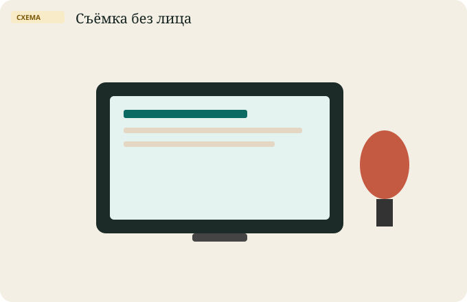
Зритель должен видеть работу, не вашу гостиную. Этого достаточно для build-in-public.
- Поставьте запись экрана телефона или компьютера (встроенные инструменты системы).
- Голос: свой, с телефона, либо озвучка, которую вы прослушали и приняли. Не оставляйте «робота», если сами морщитесь от звука.
- На экран: таблица, схема завода, слайды карусели, петля агентов. Лицо — по желанию позже.
- Длина первых роликов: один хук, одна мысль, один призыв. Не лекция на 12 минут.
Пример сценария Reels без лица (30–40 секунд)
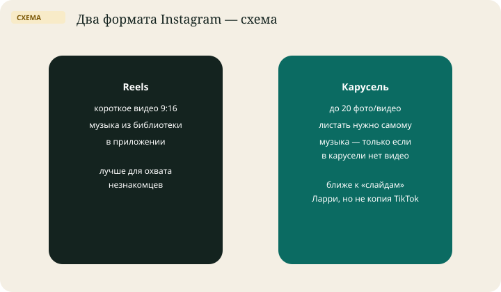
Два разных формата Instagram. Их нельзя считать одной и той же кнопкой.
Тикток-слайдшоу нельзя «переименовать» в Instagram и ждать тот же эффект. Ниже — только проверенные отличия.
- Если хотите ближе к слайдам Ларри: соберите 6–10 вертикальных картинок с коротким текстом. В Instagram это карусель в ленте. Официальная справка: в одном посте можно до 20 фото и видео. Источник: Share a post with multiple photos or videos.
- Музыку к карусели официально можно добавить, если в ней только фото. Если в карусели есть видео, музыку добавить нельзя. Источник: Add music to a post with multiple photos.
- Если нужен охват незнакомцев, ближе к «рекомендациям» TikTok, собирайте короткое вертикальное видео Reels: склейка тех же слайдов, запись экрана или схема. Музыку ищите через инструмент Audio в Reels. Справка: Add music, effects and more to your reel и What audio you can use in your reel.
- Ориентацию карусели задаёт первый кадр: она одна на весь пост. Через API изображения карусели по умолчанию режутся ближе к квадрату. Для «слайдов как в TikTok» безопаснее собирать 9:16 и публиковать как Reel либо тщательно проверить обрезку.
- Публикацию первых недель делайте в официальном приложении: так вы сами ставите музыку и видите, как выглядит кадр.
Кейс Ларри: что это было, и как перенести в Instagram
Ларри — маркетинговый ИИ-агент, который Оливер Генри (Oliver Henry, на ClawHub — olliewazza) собрал, чтобы продвигать свои iOS-приложения Snugly и Liply. Метод описан на официальной странице навыка: clawhub.ai/olliewazza/skills/larry. Площадка публикации у Ларри — TikTok, не Instagram.
| Что говорит первоисточник | Как не надо цитировать | |
|---|---|---|
| Результаты | На странице навыка Larry указано: 7 миллионов просмотров вирусной статьи в X, более 1 миллиона просмотров в TikTok и 670 долларов MRR в месяц, «всё с ИИ-агента на старом игровом ПК». | В пересказах встречаются другие цифры (например, «8 миллионов за неделю»). Исходную ветку в X в этой сборке открыть не удалось (ответ 403). Поэтому цифры из пересказов не считаем подтверждёнными первоисточником. |
| Конвейер | Исследовать чужие хуки → собрать набор вертикальных картинок (на странице навыка — 6 портретных кадров) → наложить короткий текст → положить черновик в Postiz в режиме только для себя (SELF_ONLY) → человек добавляет трендовый звук и публикует. Дальше — ежедневный разбор статистики. Для выручки приложений упоминается RevenueCat. | Нельзя писать, будто Ларри «сам выкладывал ролики без человека». В описанном методе человек как раз нужен на звуке и кнопке публикации. |
| Стоимость | На странице навыка отдельно подчёркнута экономия через Batch API (на 50% дешевле). Конкретную сумму «столько-то долларов за пост» как цифру автора мы на этой странице не закрепляем. | Не переносите чужие оценки себе в оффер как гарантированную себестоимость. |
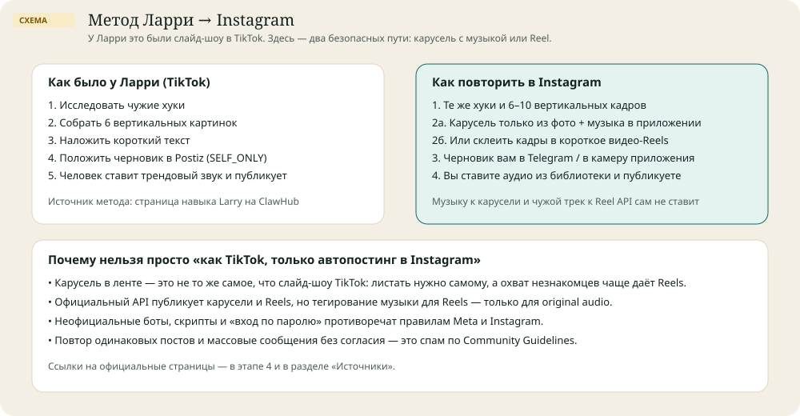
Проверенные отличия TikTok-слайдов, карусели и Reels
| Вопрос | У Ларри в TikTok | Карусель Instagram | Reels Instagram |
|---|---|---|---|
| Что это за формат | Слайд-шоу из картинок со звуком, как короткий ролик в рекомендациях TikTok | Один пост ленты из нескольких фото или видео, до 20 штук (справка Instagram) | Короткое видео во вкладке Reels; в справке указано, что записывать и монтировать можно ролики длительностью до 20 минут |
| Как смотрят | Слайды обычно идут сами под звук, как видео | Листать кадры нужно самому. Это уже не «тот же TikTok» | Идёт как видео, ближе к рекомендательной ленте коротких роликов |
| Музыка | В методе Ларри трендовый звук ставит человек перед публикацией | Музыку можно добавить в приложении, только если карусель из фото, без видео (справка Instagram) | Музыку и эффекты добавляют в приложении. Можно своё original audio, чужое original audio или библиотеку Instagram. Лицензионные треки должны атрибутироваться. Справка: «What audio you can use in your reel» |
| Официальный API | У Ларри публикация шла через черновик (Postiz), не «в обход человека» | Content Publishing API умеет карусели для профессиональных аккаунтов. Reels нельзя класть внутрь карусели. На одной официальной странице сейчас указан лимит до 20 дочерних элементов; изображения режутся по первому кадру, по умолчанию 1:1 | API публикует Reels как media_type=REELS. Важное ограничение документации: тегирование музыки доступно только для original audio. То есть чужой трек из библиотеки так, как в приложении, API сам не ставит |
| Лимиты публикации через API | — | В разделе Rate Limit официального гида Content Publishing (страница открыта 16.11.2026): до 100 публикаций через API за скользящие 24 часа, карусель считается одной публикацией. В том же документе, в блоке ограничений карусели, также написано про 50 публикаций за 24 часа. Цифры на одной странице расходятся — перед нагрузкой смотрите актуальный текст и запрос content_publishing_limit. Контейнеры истекают через 24 часа; можно создать до 400 контейнеров за 24 часа (справка IG User Media). | |
Как повторить метод Ларри безопасно
- Радар собирает чужие хуки и ваши темы — как у Ларри, исследование чужого контента вручную или через ваших агентов. Не собирайте данные с instagram.com скриптами в обход официального API: Meta прямо пишет, что программный доступ допустим только через Platform APIs. Источник: Automated Data Collection.
- Автор и генератор картинок собирают 6–10 вертикальных кадров с коротким текстом (хук про зрителя, не «я собрал стартап»).
- Для охвата: склейте кадры в вертикальное видео и готовьте Reel. Для «листать и сохранить»: карусель только из фото и музыку добавите в приложении.
- Черновик приходит вам в Telegram или лежит в папке. Вы 30–60 секунд, как в методе Ларри, ставите звук и жмёте публикацию.
- Раз в день смотрите, какие хуки удержали взгляд. Без выдуманной статистики.
Пример 6 слайдов в духе Ларри, но про ваш завод
Правила Instagram, которые прямо ограничивают «полного Ларри-автопилота»
- Нельзя автоматизировать Instagram в обход официального API. Meta: программный доступ — только через Platform APIs, без предварительного разрешения нельзя собирать данные автоматизированными средствами; «The use of scripts, HTTP libraries, javascript or other executable code to automate actions or perform requests of Facebook data outside of the Platform APIs is not allowed.» Источник: Automated Data Collection. Плюс Terms of Service 3.2.3, на которые этот документ ссылается.
- Не отдавайте логин и пароль сторонним «автопостинг-ботам». Справка Instagram прямо отговаривает от приложений, которые просят доступ в обмен на лайки и подписчиков, и предупреждает об ограничениях аккаунта. help.instagram.com/263751177667145.
- Не спамьте. Community Guidelines: не собирать лайки, подписчиков и репосты искусственно; не публиковать повторяющиеся комментарии или контент; не писать людям снова и снова с коммерческой целью без согласия. Community Guidelines.
- Официальная публикация через API возможна для профессиональных аккаунтов: одиночные фото, видео, Reels, карусели и сторис. Нужны соответствующие разрешения, например instagram_business_content_publish или instagram_content_publish — в зависимости от типа входа. Источник: Content Publishing.
- Музыка — причина оставить человека в контуре. Для Reels в API «Music tagging is only available for original audio». Для карусели музыка добавляется в приложении и только к фото. Если скопировать Ларри «один в один», кнопка «поставить тренд и опубликовать» остаётся за вами — и это совпадает с его собственной логикой черновика.
- Метка ИИ. В Content Publishing API есть параметр is_ai_generated=true для самораскрытия ИИ-контента при публикации. Для карусели флаг ставят на контейнер карусели, не на каждый кадр. Имеет смысл включать, если картинки или голос сгенерированы.
- Форматы нельзя смешивать как попало: «Reels cannot appear in carousels» — официальное ограничение IG User Media.
- Developer Policies требуют согласие человека, прежде чем публиковать что-то от его имени. Когда будете ставить завод клиенту, публикация должна идти с его явного согласия, не «мы уже всё выложили».
Показываем
«Разбираю Ларри без сказки: у него TikTok и человек на звуке. Вот как я повторяю это в Instagram — карусель из фото с музыкой и отдельный Reel. И вот чего не буду делать: серый автопостинг по паролю.»
Зарабатываем
Каждый такой разбор продаёт сразу две вещи: ваш пилот («соберём так же, но по правилам площадки») и вашу честность. В конце — один призыв написать «завод», не ссылка на пять офферов.
Первые продажи пилотов — ещё без аудитории
Цель первых двух недель: 3–5 живых пилотов по вводной цене. Канал — тёплые контакты и местный бизнес, не «вирусный ролик».
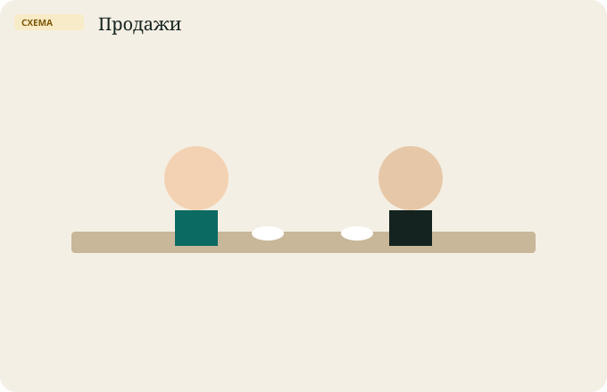
Это не рассылка в директ незнакомцам. Community Guidelines как раз предостерегают от повторных коммерческих сообщений без согласия. Пишете тем, с кем уже есть контакт.
- Возьмите 7 имён из этапа 0.
- Пишите в тот канал, где вас уже знают: WhatsApp, Telegram, личные сообщения.
- Одно сообщение, одна мысль, один вопрос про удобное время. Не вставляйте прайс в первое предложение, если это неуместно в ваших отношениях.
- Если человек не ответил — можно одно вежливое напоминание через несколько дней. Не третью и четвёртую «простыню».
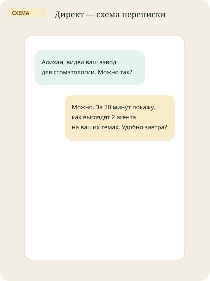
Пример первого сообщения
Люди покупают понятный конвейер на своих темах, а не лекцию про будущее ИИ.
- 10 минут: вы слушаете, откуда у них берётся контент и где застревает.
- 10 минут: показываете таблицу, радар, автора и один черновик на ИХ теме (заготовьте его до звонка).
- 5 минут: состав пилота, срок, цена-предложение, рассрочка 50/50, что не входит.
- После звонка — короткое резюме в переписку и реквизиты, если человек готов.
Пример рамки созвона
Пока деньги не пришли, не собирайте клиенту полный завод «в долг из энтузиазма» — сгораете и путаете границы.
- После оплаты пришлите чек / подтверждение и ссылку на его таблицу.
- В первый день заполните 15 тем вместе с клиентом: это часть работы, не «пусть сам потом».
- Сдачу оформляйте списком: что установлено, как пользоваться, что клиент делает сам каждый день.
Показываем
«Написал семи знакомым. Вот скрипт без имён. Двое ответили. Одного завтра разбираю на его темах.» Не публикуйте чужие переписки и названия клиентов без разрешения.
Зарабатываем
Это кассовые дни проекта. Цель — живые пилоты, не «охват ролика». Вводная цена 80–120 тыс. ₸ — предложение, чтобы быстрее получить кейсы, а не вечный демпинг.
Нюансы и подводные камни
- Не обещайте, что после пилота у клиента «полетит блог». Вы продаёте систему черновиков и очередь, не рекламу.
- Холодные директы незнакомцам пачками — плохая идея и по этике, и по правилам Instagram о коммерческих сообщениях без согласия.
- Вводная цена должна быть названа вводной. Иначе через месяц не сможете поднять чек без ощущения хаоса.
Кейсы: только правда и только с разрешения
Три-пять историй нужны, чтобы позже продавать курс и завод под ключ. Одна выдуманная цифра разрушает весь бренд.
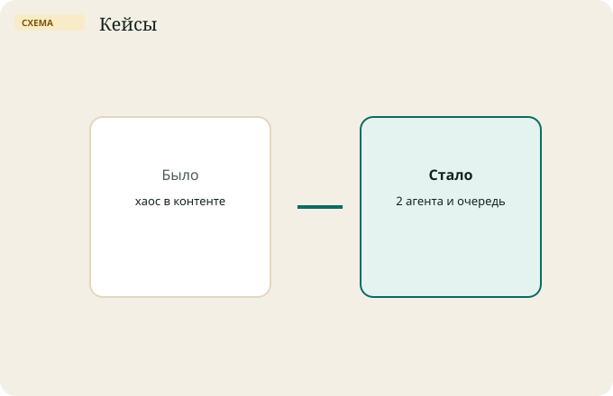
Каркас защищает от приукрашивания.
- После сдачи пилота попросите письменное разрешение: можно ли назвать компанию, что именно можно показать, какие цифры можно назвать.
- Запишите только то, что клиент подтвердил: какая была боль, что собрали, сколько заняло, что изменилось в работе (не в фантазиях про охваты).
- Если цифр нет — обойдитесь процессом. «Была каша в заметках, стала очередь из 30 тем и два агента» — уже кейс, если это правда.
Пример запроса разрешения
Пример каркаса кейса без выдуманных метрик
Показываем
Карусель кейса и Reel «как это было собрано». Это и контент, и доверие к курсу.
Зарабатываем
Кейс закрывает возражение «а у кого-то уже работает?». После 3–5 таких историй можно честно продавать обучение и полный завод.
Нюансы и подводные камни
- Никаких «у клиента +300% охвата», если этого не было в отчёте.
- Медицинские, детские и финансовые темы требуют ещё большей осторожности с персональными данными.
- Клиент может отозвать разрешение — уберите имя и узнаваемые детали.
Курс и клуб — только после кейсов
Пока нет своих историй, курс выглядит как пересказ чужих роликов. Подождите 3–5 пилотов.
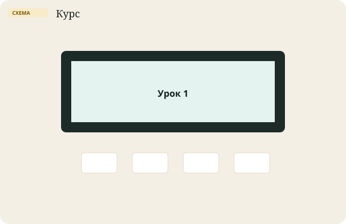
Вам не нужна новая теория. Нужен путь, который вы уже прошли сами, плюс разборы ошибок пилотов.
- Оглавление: этапы 0–6 как уроки, плюс домашка (таблица, два промпта, один ролик, одно сообщение тёплому контакту).
- Решите формат: курс с уроками или клуб с разборами. Можно начать с короткого курса и чата.
- Цену ставьте после того, как посмотрите актуальные открытые оферты конкурентов и свои кейсы. Здесь мы сознательно не выдумываем «правильную» стоимость курса.
- В продажах курса снова один главный призыв, не пять тарифов в первом ролике.
Показываем
«Собираю урок 3 прямо из рабочей таблицы клиента (с разрешения) / из своей таблицы. Вот ошибка, которую я сам допустил в первую неделю.»
Зарабатываем
Курс и клуб — следующая ступень лестницы. Их продают кейсы и открытая сборка, не абстрактные обещания профессии мечты.
Нюансы и подводные камни
- Не обещайте заработок выпускникам. Обещайте навык и разбор.
- Когда продаёте многим незнакомым людям, оформите оферту, правила возврата и политику данных — по актуальным требованиям вашей юрисдикции.
- Не кладите в курс чужие шаблоны, на которые у вас нет прав.
Завод под ключ — для тех, кто не хочет настраивать сам
Это расширенный пилот: вы собираете систему на стороне клиента и оставляете регламент. Цена выше, границы жёстче.
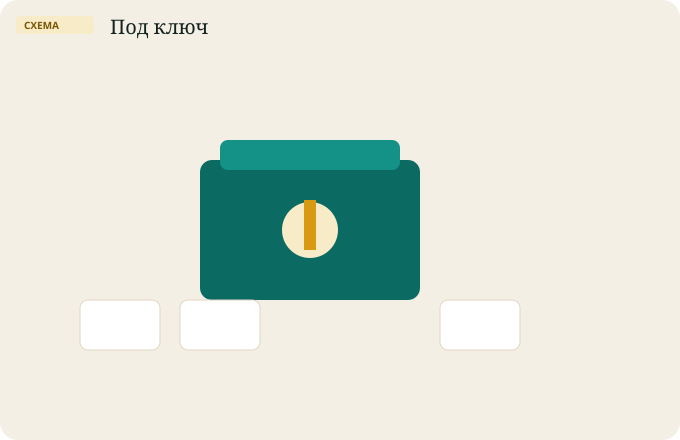
Под ключ легко превращается в «ведите нам блог всю жизнь».
- В договор: таблица, два агента, библия стиля, папка с 15 утверждёнными черновиками, регламент «кто публикует и кто ставит музыку», час обучения.
- Отдельным пунктом: автопостинг, реклама, аватар, ежедневное ведение — это не входит, либо стоит отдельным счётом.
- Публикация в Instagram — только с явного согласия клиента и через официальное приложение либо официальный API. Не ставьте серые боты на его логин.
- Цену назначайте выше пилота и только когда уже есть кейсы. Конкретную сумму здесь не выдумываем.
Пример границы в коммерческом предложении
Показываем
«Как упаковываю завод под ключ: вот чеклист сдачи, вот чего в нём нет. Поэтому цена выше пилота.»
Зарабатываем
Это верхняя ступень лестницы. Её покупают занятые люди, которые уже поверили кейсу, а не уроку.
Нюансы и подводные камни
- Ключи API клиента храните у клиента или в его n8n, не в своей личной переписке.
- Developer Policies Meta требуют согласия, прежде чем публиковать от чужого имени.
- Голос бренда клиента нельзя полностью отдать модели: без его правок тексты будут «общими».
Автоматизация в n8n: первый живой конвейер
Сначала завод должен продаваться руками. n8n подключаете, когда уже понятно, какую рутину повторяете каждый день. Первый сценарий не публикует ничего в Instagram: он берёт тему из таблицы, просит модель написать черновик, проверяет его и присылает вам в Telegram.
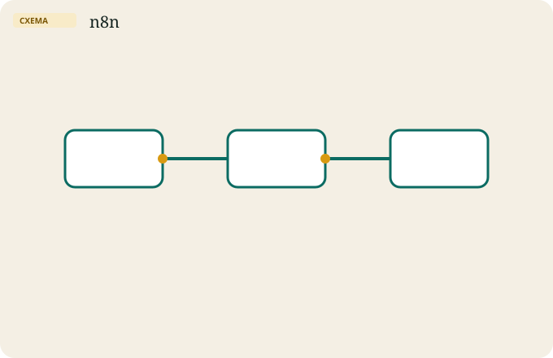
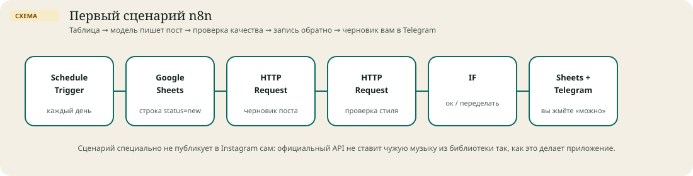
Файл учебный. Перед запуском замените все значения REPLACE_…, привяжите свои учётные данные и не включайте расписание, пока не пройдёт ручной тест. В файл не вшиты ключи.
Как получить n8n: облако или свой сервер
Цифры ниже — с официальной страницы n8n.io/pricing, открытой 16 ноября 2026. Перед оплатой откройте её снова.
| n8n Cloud | Community Edition (свой сервер) | |
|---|---|---|
| Что это | Сервис, который хостит n8n за вас. Данные облачных планов, по этой же странице, хранятся в ЕС, на серверах во Франкфурте. | Стандартная самостоятельно размещаемая версия, доступная на GitHub. Программу не тарифицируют как Cloud; вы платите за свой сервер и сами отвечаете за обновления, HTTPS и сохранность. |
| Пробный период | Для обычного Cloud trial на странице указано: функции уровня Pro, 1 000 выполнений, 5 одновременных, таймаут выполнения 180 секунд, 1 командный проект, 800 кредитов Assistant и 100 ИИ-кредитов. «No credit card is required for the n8n Cloud trial». Карта нужна для пробного периода плана Business. | Отдельного «триала» не требуется: ставите Community Edition и работаете в рамках её возможностей. |
| Платные тарифы Cloud (как написано на странице) | Starter: 20 € в месяц при годовой оплате. Pro: 50 € в месяц при годовой оплате. На карточках этих планов также указано «No credit card required». План Business на странице: 667 € в месяц при годовой оплате (самостоятельно размещаемый вариант в этой строке тоже упомянут). Точную месячную квоту выполнений вашего тарифа смотрите на самой странице в момент оплаты — в открытом фрагменте тарификация идёт по числу запусков сценария целиком, а не по каждому узлу. | Стоимость = цена VPS и домена. Конкретный прайс хостера здесь не выдумываем: откройте выбранного провайдера. |
| Кому что | Быстрее начать, если есть способ оплатить евро позже и не хотите админить сервер. | Дешевле на длинной дистанции и данные остаются у вас, если готовы поставить Docker и обновления. |
Цель: попасть в редактор сценариев без установки сервера.
- Откройте n8n.io/pricing и актуальное начало работы с Cloud с официального сайта n8n.
- Создайте аккаунт и войдите в редактор. Имена кнопок в кабинете могут меняться — если не уверены, следуйте официальному онбордингу, а не этой схеме.
- Пока идёт пробный период, соберите один учебный сценарий и посмотрите счётчик выполнений. Не оставляйте боевое расписание «каждую минуту»: 1 000 выполнений триала конечны.
Официальная инструкция: docs.n8n.io/hosting/installation/docker. Ниже — типовые команды из этой документации. Если страница обновилась, делайте как в ней.
- Установите Docker официальным способом для вашей системы.
- Создайте том и запустите контейнер, как в документации. Типовой вид команд на официальной странице такой:
После этого редактор обычно открывается на http://localhost:5678. На удалённом VPS вам ещё понадобятся HTTPS, защита панели и корректный URL для вебхуков — это разобрано в официальном разделе хостинга, не выдумывайте конфигурацию nginx «на глаз».
Сценарий не заработает, пока не будет трёх внешних дверей.
- Таблица topics уже есть с этапа 3. Скопируйте ID таблицы из адресной строки Google: это набор символов между /d/ и /edit.
- Телеграм-бот: в Telegram откройте официального @BotFather, создайте бота и сохраните токен. Напишите своему боту любое сообщение. Узнайте свой числовой chat ID (например, через аккуратно выбранный служебный бот или API getUpdates). Токен — секрет, в репозиторий его не кладите.
- Ключ языковой модели: в кабинете OpenAI (или другого провайдера) создайте API-ключ. Для учебного JSON используется Chat Completions API: официальная справка. Имя модели в JSON стоит как заготовка gpt-4.1-mini — замените на модель, которая реально доступна в вашем аккаунте.
- В Google Cloud включите Google Sheets API и Google Drive API и создайте OAuth-клиент, как описано в документации n8n про учётные данные Google. Путь кнопок в консоли Google меняется, поэтому клик-путь здесь не выдумываем.
Официальный раздел про импорт: docs.n8n.io/workflows/export-import. Обычно в редакторе это пункт меню вроде Import from File. Если в вашей версии он называется иначе, следуйте документации.
- Скачайте файл workflows/sheets-llm-telegram.json.
- В n8n откройте импорт из файла и выберите его.
- Откройте Credentials и создайте три учётки, не вписывая секреты в поля узлов:
- Google Sheets OAuth2 API — подключите свой Google-аккаунт и разрешите доступ к таблице.
- Header Auth для HTTP Request: имя заголовка Authorization, значение Bearer ВАШ_КЛЮЧ (слово Bearer, пробел, ключ).
- Telegram API — вставьте access token бота. Документация узла: Telegram node.
- В узлах Google Sheets замените REPLACE_WITH_GOOGLE_SHEET_ID. В узлах Telegram замените REPLACE_TELEGRAM_CHAT_ID.
- Отключите узел Schedule Trigger на время тестов (или не активируйте workflow), чтобы сценарий не бежал сам.
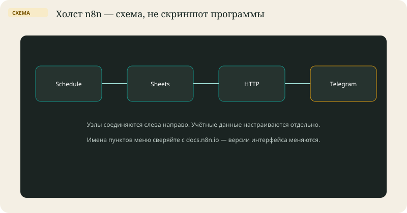
Узел за узлом: что заполнить
| Имя узла в файле | Тип (как в n8n) | Что заполнить |
|---|---|---|
| Manual Trigger | Manual Trigger n8n-nodes-base.manualTrigger | Полей нет. Нужен, чтобы нажать Test workflow. Документация: manual trigger. |
| Schedule Trigger | Schedule Trigger | Правило: каждый день, час 9, минута 0 — по часовому поясу инстанса. Проверьте пояс в настройках n8n, если живёте в Азии/Алматы (UTC+5). Документация: schedule trigger. |
| Google Sheets Get New Topic | Google Sheets | Операция чтения строк. Document ID — ID таблицы. Имя листа topics. Фильтр: колонка status равна new, вернуть первое совпадение. Документация: Google Sheets. Если в вашей версии операция называется иначе («Get Row(s)» / «Read»), выберите чтение строк с фильтром — смысл тот же, имя сверьте по подсказке узла. |
| IF Topic Exists | If | Условие: поле topic существует. Ложная ветка пустая: если новых тем нет, сценарий просто заканчивается. |
| Edit Fields Keep Topic | Edit Fields (прежнее имя: Set) | Оставляет topic, format, audience и row_number. |
| HTTP Request Draft Post | HTTP Request | Метод POST, URL https://api.openai.com/v1/chat/completions, аутентификация Header Auth, JSON-тело с сообщениями system/user. Документация узла: HTTP Request. |
| Edit Fields Parse Draft | Edit Fields | Забирает текст из choices[0].message.content. |
| HTTP Request Quality Check | HTTP Request | Тот же URL и та же учётка. Система — редактор по библии стиля, ответ ожидается с словом PASS или FAIL. |
| IF Quality Passed | If | Строка ответа содержит PASS. Если модель отвечает иначе, поправьте условие после первого теста. |
| Google Sheets Mark Review / Mark Rewrite | Google Sheets | Операция обновления строки: status = review или rewrite, плюс draft и critique. |
| Telegram Send Draft / Send Rewrite | Telegram | Операция отправки сообщения (Send Message). Поле Chat ID — ваш числовой идентификатор. Текст уже собран в узле. |
Активация без теста — самый быстрый способ потратить квоту и заспамить себя.
- Положите в таблицу одну строку со статусом new и простой темой.
- Нажмите Test workflow от Manual Trigger.
- Если узел красный, откройте его Execution и читайте текст ошибки: чаще всего это 401 (ключ), пустой chat ID, таблица не найдена или модель недоступна.
- Проверьте, что в Telegram пришёл черновик, а статус строки сменился.
- Только после двух успешных ручных прогонов включите Schedule Trigger и активируйте workflow переключателем Active.
- Не добавляйте сюда узлов «залогиниться в Instagram и нажать Publish». Это противоречит правилам Meta про автоматизацию вне Platform APIs.
Пример, как выглядит успешный прогон «на пальцах»
Показываем
Запись экрана: один прогон от строки таблицы до сообщения в Telegram. Отдельно проговорите вслух: «В Instagram это само не уходит, и это специально».
Зарабатываем
Этот конвейер — платная опция завода под ключ и урок в курсе. Сам по себе он не должен быть первым товаром: без продаж и без библии стиля это просто красивая схема.
Нюансы и подводные камни
- Ключи в публичном workflow = украденные ключи. После случайной публикации отзовите ключ сразу.
- Оплата n8n Cloud идёт в евро. Из Казахстана платёж может не пройти обычной локальной картой — заранее проверьте способ оплаты, не в последний день триала.
- Community Edition на открытом порту без пароля и HTTPS собирать нельзя: панель увидит кто угодно.
- Лимит триала Cloud: 1 000 выполнений и 180 секунд на одно выполнение (официальная страница цен на 16.11.2026). Тяжёлые циклы и частые расписания его съедают.
- Готовые community-узлы «Instagram login / unofficial» не используйте: это как раз автоматизация вне официального API.
- Версии узлов в JSON указаны как typVersion 4.5 / 4.2 / 2.2 / 1.2 и т.д. При импорте n8n часто сам предлагает миграцию. Если поле называется иначе — сверьте с подсказкой узла и официальной документацией, не ломайте JSON наугад.
ИИ-аватар — позже, как второе лицо
Аватар не запускает кассу в первую неделю. Он может стать бонусом курса или отдельной рубрикой лекций, когда уже есть голос бренда и кейсы.
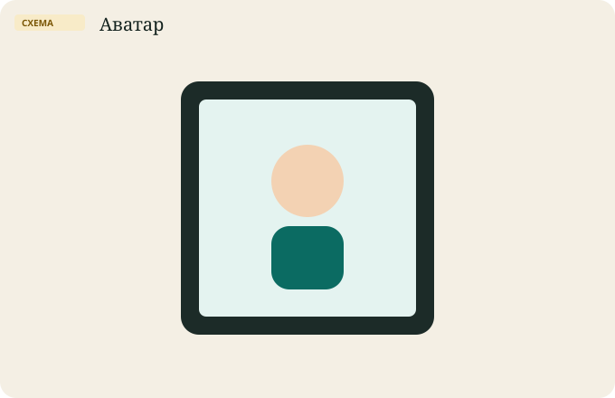
Дороже, дольше согласовывается и хуже продаёт, пока нет доверия к живому человеку или хотя бы к честному экрану.
- Сначала закройте этапы 0–6.
- Когда будете готовы, выберите сервис по официальному сайту и актуальному прайсу (категория: генерация видео с аватаром и клоном голоса). Здесь не закрепляем цену конкретного тарифа — она часто меняется.
- Снимите согласие на использование вашего лица и голоса, даже если сервис «для себя».
- В описании ролика честно скажите, что это ИИ-аватар. При публикации через официальный API можно использовать флаг is_ai_generated.
- Не ставьте аватар «продавать за вас» в директ. Живой разговор о пилоте остаётся за вами.
Показываем
«Пробую аватар как бонус урока, не как замену себе. Вот где он врёт интонацией, вот где экономит съёмку.»
Зарабатываем
Аватар — возможный бонус курса или отдельная услуга «лекционный канал». Это не первый оффер и не замена пилоту.
Нюансы и подводные камни
- Чужое лицо и чужой голос без права нельзя. Свой — тоже лучше зафиксировать согласием, если аватар появляется в платном продукте.
- Некоторые площадки и рекламные кабинеты отдельно регулируют синтетический контент. Перед рекламой перечитайте актуальные правила.
- Себестоимость минуты аватара легко съедает маржу дешёвого курса. Считайте до записи «сотни уроков».
Словарь простыми словами
- Агент
- Не «живой сотрудник». Это заранее написанная инструкция для модели плюс входные данные (ваша база, тема, библия стиля).
- Библия стиля
- Короткий список правил, как писать и как нельзя. Нужен, чтобы тексты не звучали как рекламный буклет.
- Пилот «2 агента под ключ»
- Первый платный продукт: вам настраивают очередь тем, радар и автора, а вы дальше сами проверяете черновики.
- Завод под ключ
- Более полная сборка той же системы у клиента, с регламентом. Это не обещание, что блог «сам будет жить вечно».
- Карусель
- Один пост Instagram из нескольких фото или видео, которые листать самому. До 20 кадров по официальной справке.
- Reels
- Короткие видео Instagram. Ближе к рекомендациям, чем карусель в ленте.
- n8n
- Конструктор автоматизаций: цветные узлы, каждый делает один шаг (взять строку, спросить модель, прислать сообщение).
- Учётные данные / Credentials
- Надёжное место в n8n, где хранятся ключи и входы. Их нельзя вписывать в сам сценарий текстом.
- Выполнение / execution
- В n8n Cloud это один запуск сценария целиком, сколько бы узлов внутри ни было. Так написано на официальной странице цен.
- API
- Официальная «дверь» сервиса для программ. Писать в Instagram нужно через их дверь, а не через чужой скрипт входа.
- MRR
- Месячная повторяющаяся выручка. В кейсе Ларри цифра 670 $ MRR взята с его страницы навыка, это его заявление, не ваш прогноз.
- Build-in-public
- Вы показываете сборку завода в открытую. Это и контент, и доверие, если не приукрашиваете.
Частые вопросы
Можно ли начать с курса, если аудитории нет?
Плохая идея. Курс без кейсов и без людей, которым вы уже помогли, почти некому покупать. Сначала пилоты тёплому кругу.
Почему нельзя сразу автопостить в Instagram, как «полный Ларри»?
У Ларри человеком ставился звук, и площадка была TikTok. В Instagram официальный API не ставит чужую библиотечную музыку так, как приложение (для Reels тегирование музыки в документации — только original audio). Неофициальные боты с паролем противоречат правилам Meta и справке Instagram. Честная копия метода: черновик вам, музыку и публикацию делаете вы.
Сколько денег нужно, чтобы стартовать?
Минимум — время, законный способ принять оплату и доступ к языковой модели. n8n и аватар можно отложить. Точную «сумму завода в месяц» мы не выдумываем: сложите только тарифы, которые сами открыли на официальных страницах.
Нужен ли VPN?
Instagram из Казахстана, как правило, доступен. Для некоторых иностранных подписок чаще мешает не «сайт закрыт», а международная оплата картой. Обходы блокировок и серые схемы входа в аккаунты здесь не разбираем и не советуем.
Что, если модель выдумала цифру в посте?
Нельзя публиковать. Для этого и нужны критик и ваша галочка. В кейсах и в рекламе выдуманные результаты разрушают доверие сильнее, чем редкий выпуск.
Галочки на сайте куда сохраняются?
Только в ваш браузер на этом устройстве. Это не облачный аккаунт. Если очистите данные сайта — прогресс пропадёт.
Где позже стоит поставить настоящие скриншоты
В этой версии все иллюстрации — схемы и рисунки, явно подписанные «Схема». Настоящие скриншоты приложений мы не рисовали и не выдавали за интерфейс. Когда будете готовы, снимите в своём браузере (и закройте секреты) такие кадры:
- Ваш Instagram-профиль и окно «добавить музыку» к карусели из фото и к Reel.
- Переход к профессиональному аккаунту по актуальной справке Instagram.
- Регистрация или статус в официальном налоговом кабинете / egov (без ИИН и адресов).
- Подключение Kaspi Pay для бизнеса по официальному экрану.
- n8n: импорт из файла, список Credentials без значений, успешный Execution.
- Google Cloud: включённые Sheets API и Drive API, без клиентского секрета.
- BotFather и страница ключа OpenAI — с полностью закрытыми токенами.
Источники
Проверено по открытым страницам 16 ноября 2026, часовой пояс Азия/Алматы. Если страница обновилась — верьте ей, а не этой копии.
- n8n, цены и устройство пробного периода: https://n8n.io/pricing/
- n8n, установка Docker: https://docs.n8n.io/hosting/installation/docker/
- n8n, импорт сценариев: https://docs.n8n.io/workflows/export-import/
- n8n, узлы Manual Trigger, Schedule Trigger, Google Sheets, HTTP Request, If, Edit Fields, Telegram — соответствующие страницы на docs.n8n.io
- OpenAI, Chat Completions: platform.openai.com/docs/api-reference/chat/create
- Instagram, Community Guidelines: help.instagram.com/communityguidelines
- Instagram, почему не стоит отдавать вход сторонним приложениям «за лайки»: help.instagram.com/263751177667145
- Instagram, карусель до 20 фото и видео: help.instagram.com/269314186824048
- Instagram, музыка в карусели только из фото: help.instagram.com/1223433768344104
- Instagram, музыка и эффекты в Reels: help.instagram.com/664508917489819
- Instagram, какое аудио можно использовать в Reel: help.instagram.com/329208821595430
- Instagram, запись Reels (в справке — длительность до 20 минут): help.instagram.com/2720958398006062
- Meta, Content Publishing API (лимиты, карусели, Reels, is_ai_generated): developers.facebook.com/documentation/instagram-platform/content-publishing/
- Meta, IG User Media (Reels cannot appear in carousels; music tagging only for original audio): документация IG User Media
- Meta, Automated Data Collection: automated-data-collection
- Meta, Developer Policies: developers.facebook.com/devpolicy/
- Кейс Larry, страница навыка (первоисточник метода и заявленных цифр): clawhub.ai/olliewazza/skills/larry
- Портал электронного правительства Казахстана: egov.kz
- Комитет государственных доходов РК: kgd.gov.kz